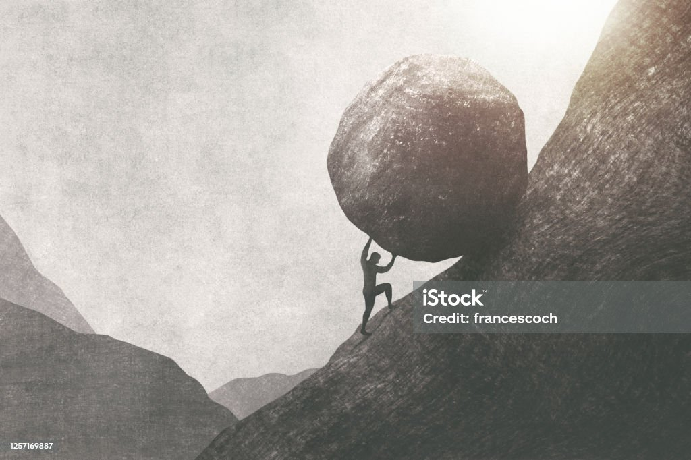

 pic
Introduction
Yet, amid this journey, persistence emerges as the unwavering flame that sustains our effort.
It is the unyielding resolve that turns setbacks into opportunities and fuels our resilience.
Through persistence, we weather the storms, surpass obstacles, and continue to move forward, undeterred by the challenges that come our way.
pic
Surfered After First Rejection
My persistance accounts from alot of rejections, failure, setbacks, distortions that made me feel like I am moving with no direction
In August 2014 I set a goal, A goal that when I finish accomplishing my System support dream I will move straight to colledges chasing my dream in codding or else I will seek a well paiying job
that will help me look after my family. Yes i conquired that 3 years in a learnership, unfortunately I couldn't find a proper job, i couldn't find colledge either up untill year 2019 then i got
a low paying job in a clothing factory in durban
That job wasn,t easy and maybe wasn't made for me so i decided to leave in by Septermber 2020. and went to another one right there in Durban.
pic
Second Rejection
There was a time when my hope came alive again. That is when i recieved an Email from WeThinkCode Institution inviting me to come and do a two week selection bootcamp with them.
By that time I felt a little bit showers of hope running in my veins restoring amusements. I was working for KFC, I had to plan how am I going to convince my employer to let me go for this but it was hard to face him at that time. I spoke with one of my collegues and ask him to also step on my shift. I went there and there were 200 other students who came for the same bootcamp with me.
I was very frustrated but didnt give up.I was managed to finish my bootcamp unfortunately I didnt nake it to be one of their 30 succesful students.
beside those failures i didn't look back i didn't surrender i cept on applying hard that's why today I found myself in NEMISA Institute.